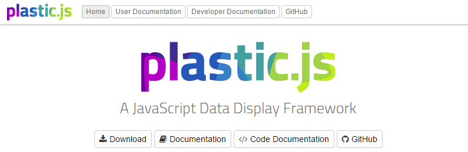

A JavaScript Data Display Framework
www.plasticjs.org
Simon Heimler University of Applied Sciences Augsburg
Preface
- Side project of my masters degree
- Working prototype / proof of concept
About plastic.js
Data Display Framework
Data Display
Data representation in general, not just visualizations
Framework
Not another library, but a framework to bind them all
Current Situation
- Countless JavaScript visualization libraries available
- Each works differently
- Some are specialized for one task
- Some are tied to a very specific envirionment
- Nearly all of them require programming knowledge
plastic.js Specs (1/2)
- Open Source: github.com/Fannon/plastic.js
- Platform neutral: Pure HTML5
- Easy to use: No programming skills required
- Modular: Loosely coupled architecture
- Extensible: Data Modules, Query Modules, Display Modules
plastic.js Specs (2/2)
- Framework: Providing a platform for existing libraries
- Dependency Management: "Smart" lazy loading
- Schemas: Uses schemas, falls back to duck-typing
- Async: Runs asyncronally and possibly multithreaded
Usage & Examples
Download from www.plasticjs.org
Include plastic.js in a HTML page
<link rel="stylesheet" href="lib/plasticjs/plastic.css">
<script src="lib/plasticjs/plastic.js"></script>
plastic.js Usage
- Can be put into any HTML page through an embed code
- Lightweight wrapper extensions for common CMS
- Example: MediaWiki Wrapper Extension
Simple Table from JSON
<plastic style="height: 400px; width: 800px;">
<div class="plastic-data"
data-url="data/simple-default.json"
data-format="simple-default">
</div>
<div class="plastic-display" data-module="simple-table"></div>
</plastic>
Simple Table from JSON
Simple Bars from SPARQL Endpoint
<div class="plastic-js" style="height: 400px">
<script class="plastic-query" type="application/sparql-query" data-query-url="http://dbpedia.org/sparql">
PREFIX rdfs: <http://www.w3.org/2000/01/rdf-schema#>
PREFIX type: <http://dbpedia.org/class/yago/>
PREFIX prop: <http://dbpedia.org/property/>
SELECT ?country_name ?population
WHERE {
?country a type:LandlockedCountries .
?country rdfs:label ?country_name .
?country prop:populationEstimate ?population .
FILTER (?population > 12000000 && langMatches(lang(?country_name), "en")) .
}
ORDER BY DESC(?population)
</script>
<script class="plastic-display" data-module="discrete-bar-chart" type="application/json">
{
"tooltips": true,
"showValues": true
}
</script>
</div>
Simple Bars - Result
User Documentation
Developer Documentation
Technical Details
Module Sequence Flow

Internal datastructure
- 2.5D Table: Table where each cell is an array of values of the same datatype
- Not the most flexible dataformat, but a good compromise of flexibility and easy usage.
JSON Schema at heart
- Lightweight alternative to XMLSchema
- Describes the data to the display modules
- Validating incoming data and options
- Auto-generate parts of the user documentation
Current State
In early development
- Working Architecture
- Several data formats supported
- Able to query SPARQL Endpoints and semantic wikis
- A few simple display modules (tables, bars, pies)
- Wrapper Extension for MediaWiki
Roadmap
- Automatically reflect and apply changes from the embed code
- Provide more modules
- Documentation++
Problems to solve
- How to deal with tree and graph data?
- Some Display Modules make only sense with a specific kind of data.
- Manage Module Requirements and Features.
- Asynchronous exception handling
Questions?
OpenSource at GitHub:
www.github.com/Fannon/plastic.js
Presentation online at:
www.fannon.de/p/plasticjs-intro